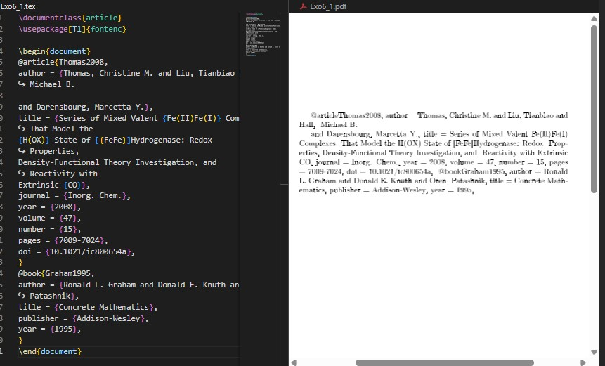
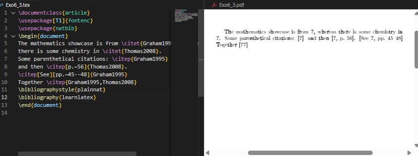
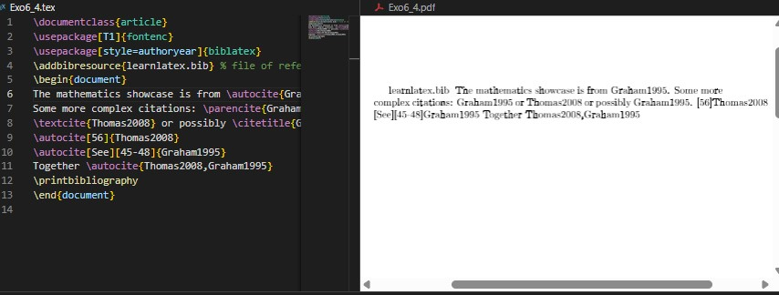
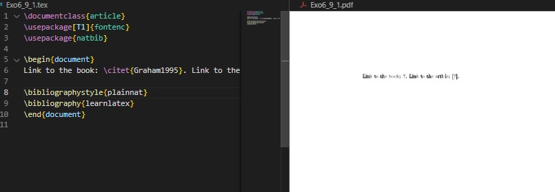
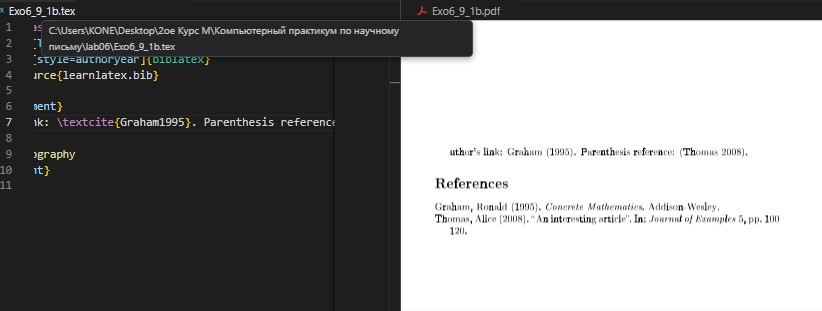
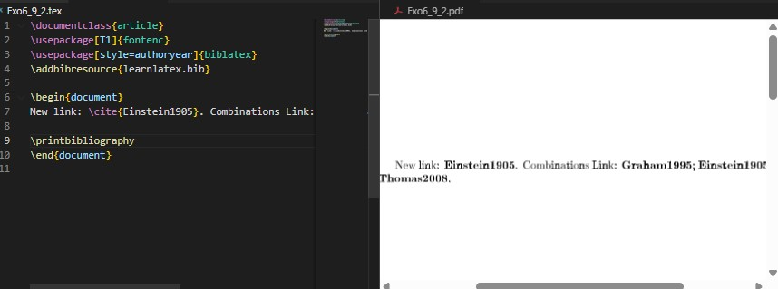
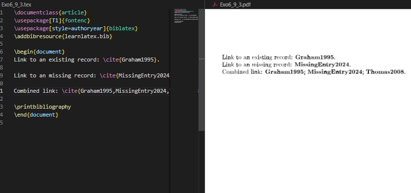
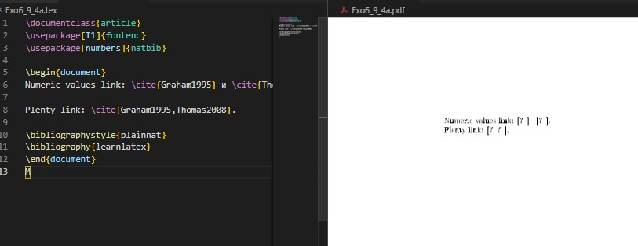
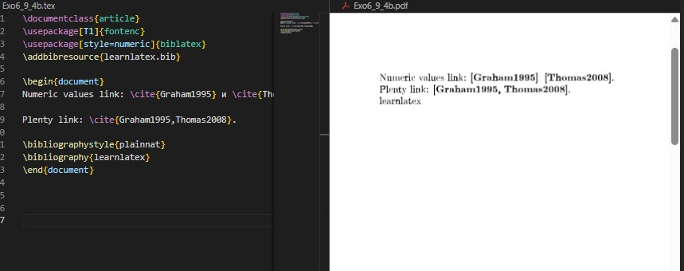

{ #fig:001 width=100% }
{ #fig:001 width=100% }Целью данной лабораторной работы является освоение методов работы с библиографией в LaTeX, включая использование систем BibTeX и biblatex для управления цитированием и списками литературы.
The purpose of this lab work is to learn how to work with bibliography in LaTeX, including using BibTeX and biblatex systems for managing citations and reference lists.
Для библиографических ссылок обычно используется информация из внешних файлов - библиографических баз данных. For bibliographic citations, information is typically retrieved from external files - bibliographic databases.
\documentclass{article}
\usepackage[T1]{fontenc}
\usepackage{natbib}
\begin{document}
Ссылка на книгу: \citet{Graham1995}.
Ссылка на статью: \citep{Thomas2008}.
\bibliographystyle{plainnat}
\bibliography{learnlatex}
\end{document}
{ #fig:001 width=100% }
Базы данных BibTeX содержат записи с различными полями. BibTeX databases contain entries with various fields.
@article{Thomas2008,
author = {Thomas, Christine M. and Liu, Tianbiao and Hall, Michael B.
and Darensbourg, Marcetta Y.},
title = {Series of Mixed Valent {Fe(II)Fe(I)} Complexes That Model the
{H(0X)} State of [{FeFe}]Hydrogenase},
journal = {Inorg. Chem.},
year = {2008},
volume = {47},
number = {15},
pages = {7009-7024},
doi = {10.1021/ic800654a},
}
\documentclass{article}
\usepackage[T1]{fontenc}
\begin{document}
@article{Thomas2008,
author = {Thomas, Christine M. and Liu, Tianbiao and Hall,
↪ Michael B.
and Darensbourg, Marcetta Y.},
title = {Series of Mixed Valent {Fe(II)Fe(I)} Complexes
↪ That Model the
{H(OX)} State of [{FeFe}]Hydrogenase: Redox
↪ Properties,
Density-Functional Theory Investigation, and
↪ Reactivity with
Extrinsic {CO}},
journal = {Inorg. Chem.},
year = {2008},
volume = {47},
number = {15},
pages = {7009-7024},
doi = {10.1021/ic800654a},
}
@book{Graham1995,
author = {Ronald L. Graham and Donald E. Knuth and Oren
↪ Patashnik},
title = {Concrete Mathematics},
publisher = {Addison-Wesley},
year = {1995},
}
\end{document}

{ #fig:002 width=100% }Для работы с библиографией требуется несколько шагов компиляции: Working with bibliography requires multiple compilation steps:
Пакет natbib предоставляет расширенные возможности цитирования. The natbib package provides enhanced citation capabilities.
\documentclass{article}
\usepackage[T1]{fontenc}
\usepackage{natbib}
\begin{document}
Математические примеры из \citet{Graham1995},
а химические из \citet{Thomas2008}.
Ссылки в скобках: \citep{Graham1995}
и затем \citep[p.~56]{Thomas2008}.
\citep[См.][pp.~45--48]{Graham1995}
Вместе \citep{Graham1995,Thomas2008}
\bibliographystyle{plainnat}
\bibliography{learnlatex}
\end{document}

{ #fig:003 width=100% }Пакет biblatex работает несколько иначе, с загрузкой ресурсов в преамбуле. The biblatex package works differently, loading resources in the preamble.
\documentclass{article}
\usepackage[T1]{fontenc}
\usepackage[style=authoryear]{biblatex}
\addbibresource{learnlatex.bib}
\begin{document}
Математические примеры из \autocite{Graham1995}.
Более сложные ссылки: \parencite{Graham1995}
или \textcite{Thomas2008}
или возможно \citetitle{Graham1995}.
\autocite[56]{Thomas2008}
\autocite[См.][45-48]{Graham1995}
Вместе \autocite{Thomas2008,Graham1995}
\printbibliography
\end{document}

{ #fig:004 width=100% }BibTeX workflow:
biblatex workflow:
Biber обеспечивает правильную сортировку для не-английских символов. Biber provides proper sorting for non-English characters.
@article{Müller2023,
author = {Müller, Hans and École, Pierre and Смирнов, Иван},
title = {Международное исследование},
journal = {Журнал},
year = {2023}
}
Пакет hyperref автоматически создает ссылки в библиографии. The hyperref package automatically creates links in bibliography.
\documentclass{article}
\usepackage[T1]{fontenc}
\usepackage[hidelinks]{hyperref}
\usepackage[style=authoryear]{biblatex}
\addbibresource{learnlatex.bib}
\begin{document}
Ссылка \autocite{Graham1995} будет гиперссылкой.
\printbibliography
\end{document}
 { #fig:005 width=100% }
{ #fig:005 width=100% }
Различные стили библиографии поддерживают разные поля. Different bibliography styles support different fields.
% Для старых стилей
@misc{Website2023,
author = {Author},
title = {Website Title},
howpublished = {\url{https://example.com}}
}
% Для новых стилей
@misc{Website2023,
author = {Author},
title = {Website Title},
url = {https://example.com}
}
natbib workflow:
\documentclass{article}
\usepackage[T1]{fontenc}
\usepackage{natbib}
\begin{document}
Ссылка на книгу: \citet{Graham1995}. Ссылка на статью: \citep{Thomas2008}.
\bibliographystyle{plainnat}
\bibliography{learnlatex}
\end{document}
Компиляция: LaTeX → BibTeX → LaTeX → LaTeX

{ #fig:006 width=100% }biblatex workflow:
\documentclass{article}
\usepackage[T1]{fontenc}
\usepackage[style=authoryear]{biblatex}
\addbibresource{learnlatex.bib}
\begin{document}
Авторская ссылка: \textcite{Graham1995}. Скобочная ссылка: \parencite{Thomas2008}.
\printbibliography
\end{document}
Компиляция: LaTeX → Biber → LaTeX

{ #fig:007 width=100% }Новая запись в learnlatex.bib:
@article{Einstein1905,
author = {Albert Einstein},
title = {On the Electrodynamics of Moving Bodies},
journal = {Annalen der Physik},
year = {1905},
volume = {322},
number = {10},
pages = {891--921},
doi = {10.1002/andp.19053221004}
}
Документ с новой ссылкой:
\documentclass{article}
\usepackage[T1]{fontenc}
\usepackage[style=authoryear]{biblatex}
\addbibresource{learnlatex.bib}
\begin{document}
Новая ссылка: \cite{Einstein1905}. Комбинированные ссылки: \cite{Graham1995,Einstein1905,Thomas2008}.
\printbibliography
\end{document}

{ #fig:008 width=100% }\documentclass{article}
\usepackage[T1]{fontenc}
\usepackage[style=authoryear]{biblatex}
\addbibresource{learnlatex.bib}
\begin{document}
Ссылка на существующую запись: \cite{Graham1995}.
Ссылка на отсутствующую запись: \cite{MissingEntry2024}.
Комбинированные ссылки: \cite{Graham1995,MissingEntry2024,Thomas2008}.
\printbibliography
\end{document}

{ #fig:009 width=100% }natbib с числовым стилем:
\documentclass{article}
\usepackage[T1]{fontenc}
\usepackage[numbers]{natbib}
\begin{document}
Числовые ссылки: \cite{Graham1995} и \cite{Thomas2008}.
Множественные ссылки: \cite{Graham1995,Thomas2008}.
\bibliographystyle{plainnat}
\bibliography{learnlatex}
\end{document}

{ #fig:010 width=100% }biblatex с числовым стилем:
\documentclass{article}
\usepackage[T1]{fontenc}
\usepackage[style=numeric]{biblatex}
\addbibresource{learnlatex.bib}
\begin{document}
Числовые ссылки: \cite{Graham1995} и \cite{Thomas2008}.
Множественные ссылки: \cite{Graham1995,Thomas2008}.
\printbibliography
\end{document}

{ #fig:011 width=100% }В ходе лабораторной работы №6 я освоил методы работы с библиографией в LaTeX. Изучил два основных подхода: традиционный workflow с natbib и BibTeX, а также современный подход с biblatex и Biber. Научился создавать библиографические базы данных, управлять стилями цитирования, работать с не-английской сортировкой и создавать гиперссылки в библиографии.
In this lab work #6, I mastered bibliography management methods in LaTeX. I studied two main approaches: traditional workflow with natbib and BibTeX, as well as modern approach with biblatex and Biber. I learned to create bibliographic databases, manage citation styles, work with non-English sorting, and create hyperlinks in bibliography.